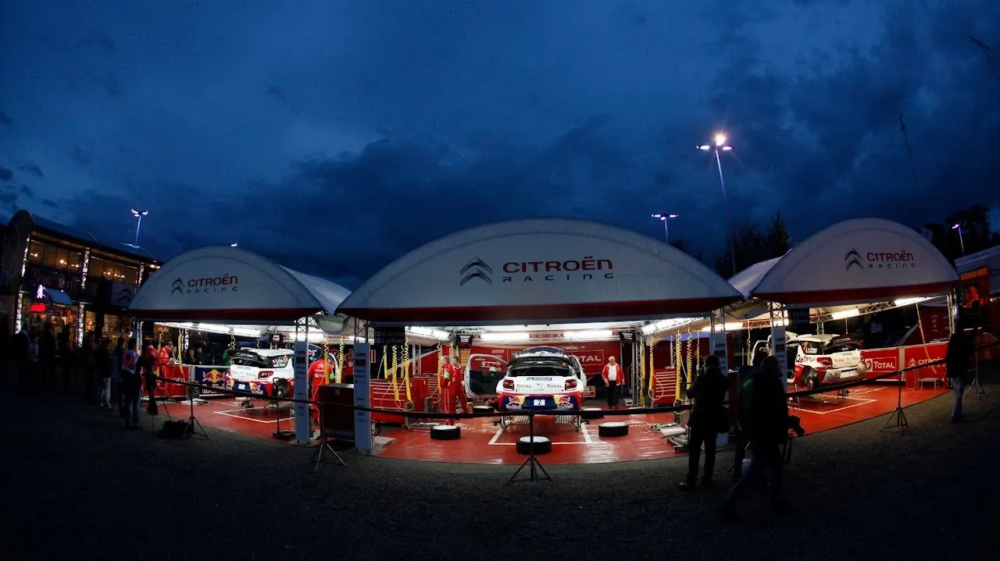
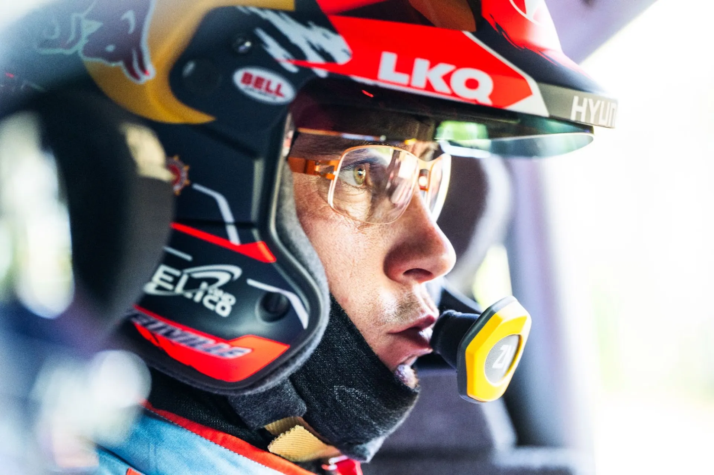
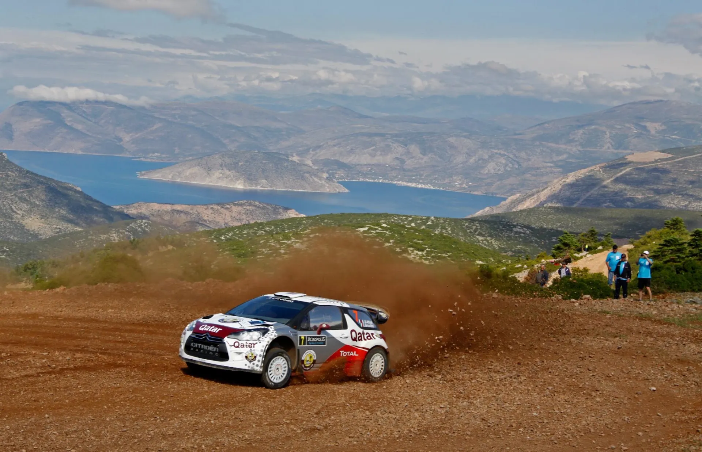
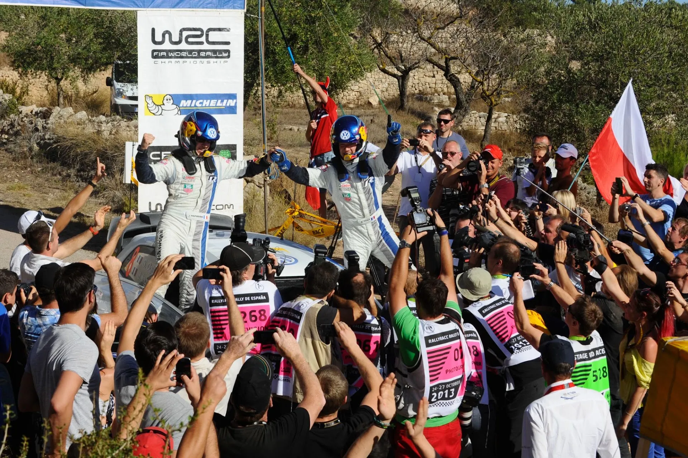
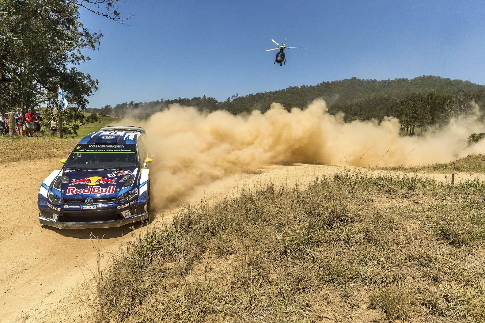

Should the Qualifying Stage return to the WRC?
Thierry Neuville was livid during the inaugural Rally Latvia, as the sandy roads of the event made life difficult for the Belgian. Being the championship leader, Neuville had to sweep the road on Friday, and due to the many one-pass stages, the Hyundai driver found himself running last of the Rally1 cars! Hyundai did deploy some team orders so that the struggling Esapekka Lappi dropped behind Neuville, to give his teammate the joy of not sweeping the stages for the second consecutive day. The damage was already done though, Neuville was almost a minute and a half behind the leader at the end of Friday, and any chances for a good result were gone.

Jaanus Ree / Red Bull Content Pool
Neuville was growing increasingly frustrated during the event, and that was evident from his stage end comments. He received little to no sympathy from his rivals when his comments were relayed to them by the usual shit-stirrer Julian Porter. However, his comments were enough to bring back the debate about the road order heading to Friday, with the most prevalent suggestion being bringing back the Qualifying Stage.

GEPA Pictures / Red Bull Content Pool
The Qualifying Stage was introduced in the WRC all the way back in 2012, and only lasted until the end of the following season. It is still being used in some National Championships, and also the ERC. How it works is relatively simple. After a set amount of runs of Shakedown, the drivers would complete another run of the same stage, this time to determine their road position for the following day. The drivers would then choose their road position based on where they placed on the Qualifying stage, the driver who got "Pole" would select first, and so on.

Volkswagen Motorsport / Red Bull Content Pool
Before debating whether this format should return or not, it is important to consider why it was dropped in the first place. Firstly, it was because of Sebastien Ogier's dominance. Ogier won 9 events in 2013, almost all of them in dominant fashion, and his dominance was helped by the Qualifying format, as he had better road position. It is worth mentioning, that it was a similar situation with Loeb in 2012. For 2014, the system was scrapped in favour of the previous format, and in 2015, the championship leader was road sweeping for the first 2 days. The problem with the Qualifying stage is that in truth, it makes faster drivers faster, and slower drivers slower by the end of the rally. This isn't the first time the format was rumoured to be in consideration for a return, as there were debates for its comeback as recently as 2018 and 2021.

Andre Lavadinho / Red Bull Content Pool
Personally, I am fine with the current system, as it also works as like a "Balance of Performance" system on some gravel rallies, where drivers lower in the standings get better road position and the field becomes bunched up. We saw that with Loubet in Acropolis in 2022, Sesks in Poland and Latvia this year and with many other drivers. People also forget, that running first on the road can be advantageous in tarmac rallies, Rally Safari, or if the road is wet.
Let's also not forget that this "part time season" bonanza we have this year is due to end for 2025, with Kalle Rovanpera returning to full time competition. The Qualifying system would amplify his dominance.


Comments